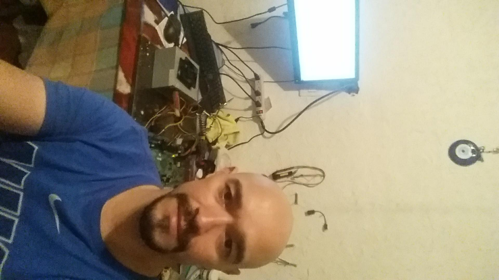

Mi Enfoque: Software Engineering & Data Insights

Soy Técnico en reparación de computadores y redes, Tecnólogo en Desarrollo de Software, actualmente estudiante de Ingeniería de Software y Datos en la IUDigital de Antioquia. Mi perfil combina la construcción de arquitecturas de software robustas con la capacidad de extraer valor de información compleja. Comprendo el ciclo de vida de la tecnología desde su infraestructura física hasta el procesamiento de datos a gran escala utilizando plataformas como Databricks.
Mi stack técnico principal incluye:
- Java & JavaScript: Construcción de aplicaciones escalables, lógica empresarial y arquitecturas web dinámicas.
- Python: Desarrollo de scripts, automatización, retos de programación y ciencia de datos.
- Análisis de Datos & Databricks: Implementación de flujos de datos (ETL), procesamiento con Spark, SQL y analítica de datos para la toma de decisiones.